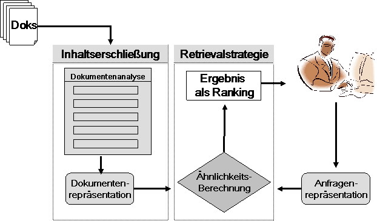

Information Retrieval Systeme

Bevor Informationen von einem System gefunden werden können, muss zunächst der Inhalt der Dokumente erschlossen werden. Information Retrieval besteht somit aus zwei Hauptkomponenten:
- Inhaltserschließung:
- Diese Komponente geht von den Informationsobjekten (Dokumenten) aus, analysiert sie und erstellt eine für die Suche geeignete Repräsentation dieser Dokumente. Diese Repräsentation wiederum wird abgespeichert und so organisiert, dass ein schneller Zugriff möglich ist.
- Retrieval:
- Diese Komponente tritt erst bei einer konkreten Suchanfrage eines Benutzers in Aktion. Diese Suchanfrage wird analysiert und ebenfalls in eine bestimmte Form gebracht, die für die Abgleichung mit den Repräsentationen der Dokumente geeignet ist. Nach der Abgleichung werden diejenigen Dokumente ausgegeben, die das System aufgrund der Ähnlichkeit zwischen der Repräsentation der Dokumente und derjenigen der Suchanfrage gefunden hat.
Es existieren drei verschiedene Verfahren zur Inhaltserschließung:
- Indexierung
- Abstracting
- Clustering